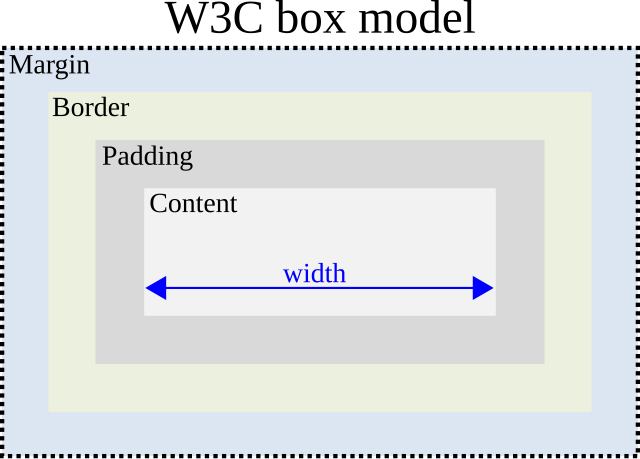

Box Model
The box model is a fundamental concept in web design that describes how elements are structured.
Q&A
What is the difference between block tags and inline tags?
Block tags take up the full width of the page and start on a new line. While, inline tags only take up as much space as their content and stay in line with other text.
What is the margin, border, and padding?
Margin is the space outside an element, border is the line around it, and padding is the space inside between the content and the border.
What are units of measurement you can use in CSS?
CSS units can be absolute like pixels (px) or relative like percent (%), em, rem, vw, and vh.
When would you use a figure tag?
A figure tag is used to group an image or visual with its caption so they stay together semantically.